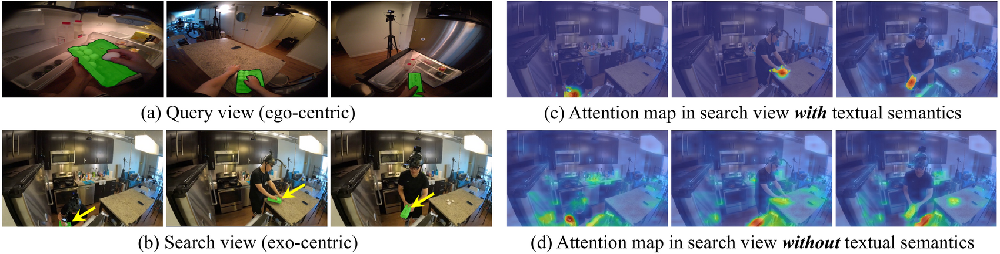
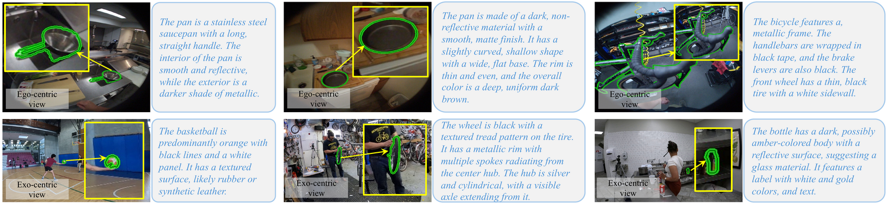
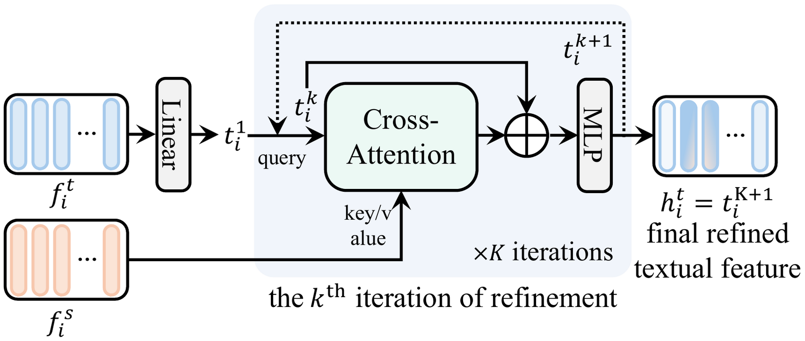
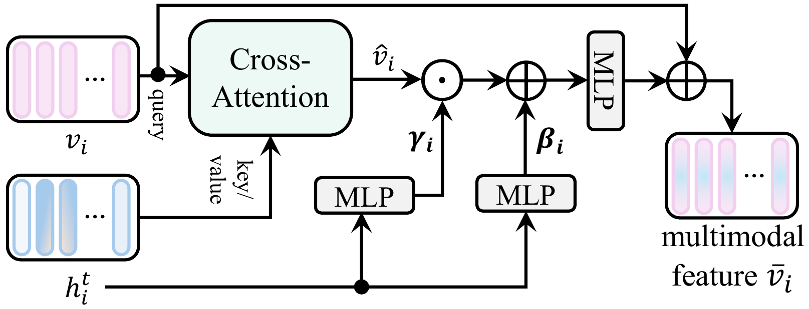
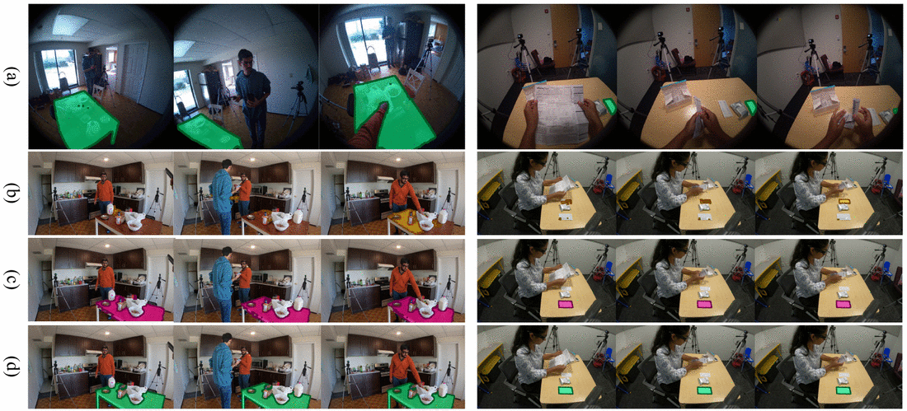
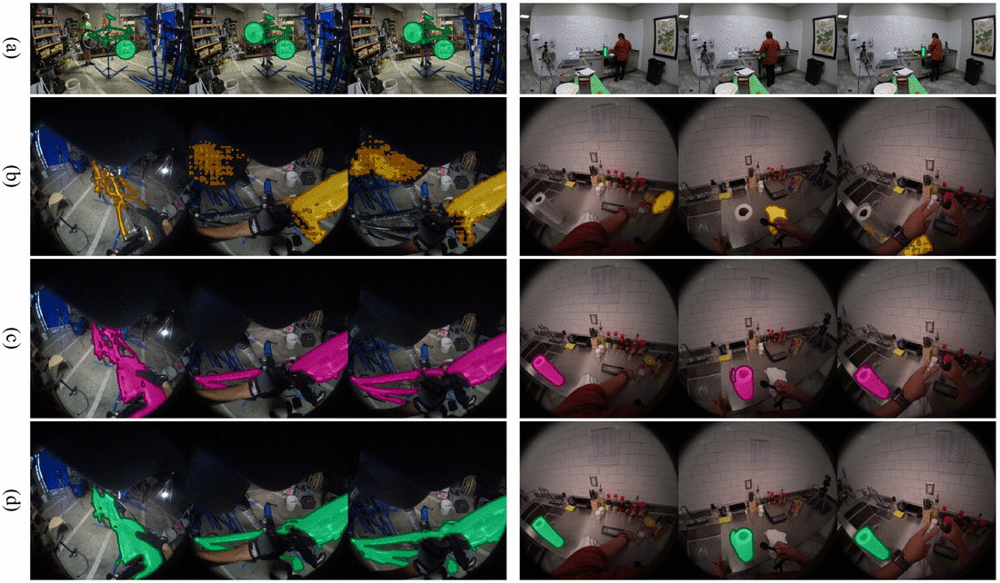

Mark an object in one camera's video. TeSCo describes it in words, then uses that description to find the same object in another camera's view of the scene — which holds up under the viewpoint and appearance changes that defeat purely visual matching.
Ego-Exo4D correspondence test split. IoU, higher is better.
| Method | Ego→Exo | Exo→Ego | mIoU |
|---|---|---|---|
| XSegTx [CVPR'24] | 18.90 | 27.10 | 23.00 |
| ObjectRelator [ICCV'25] | 35.30 | 40.30 | 37.80 |
| PCC [CVPR'25] | 39.01 | 47.06 | 43.04 |
| O-MaMa [ICCV'25] | 42.60 | 44.10 | 43.35 |
| CCMP [CVPR'26] | 41.95 | 47.18 | 44.57 |
| V²-SAM [CVPR'26] | 46.30 | 49.60 | 47.95 |
| LM-EEC [NeurIPS'25] | 54.98 | 65.77 | 60.38 |
| Baseline (ours, no text) | 52.70 | 58.30 | 55.50 |
| TeSCo | 60.40 | 70.30 | 65.35 |
Each clip shows exactly what the model is given and what it returns. The sentence under each pair is the description the model was conditioned on for that frame.
Attention in the search view, with textual semantics and without.

Generated per frame, describing attributes that survive a change of viewpoint.



Left to right: query view, baseline, TeSCo, search view with ground truth.


Predict, assemble, score. Full instructions in the repository.
git clone https://github.com/fb-reps/TeSCo && cd TeSCo
conda env create -f environment.yml && conda activate tesco && pip install -e .
python tools/correspondence_inference.py \
--sam2_cfg sam2.1/sam2.1_hiera_b+_egoexo_text.yaml \
--sam2_checkpoint training/checkpoints_EgoExo/tesco_egoexo4d_epoch59_for_inference.pt \
--base_video_dir data/EgoExo4D/data_segswap_test \
--input_mask_dir data/EgoExo4D/data_segswap_test \
--output_mask_dir output/ego2exo --caption_subdir dam_frame_captions_v2
python evaluation/unified_eval.py --gt data/gt_results/egoexo_test_gt.json \
--pred output/ego2exo.json --task ego-exo --coverage both@inproceedings{tesco2026,
title = {Exploiting Textual Semantics for Robust Cross-View Object Correspondence},
booktitle = {Advances in Neural Information Processing Systems (NeurIPS)},
year = {2026}
}